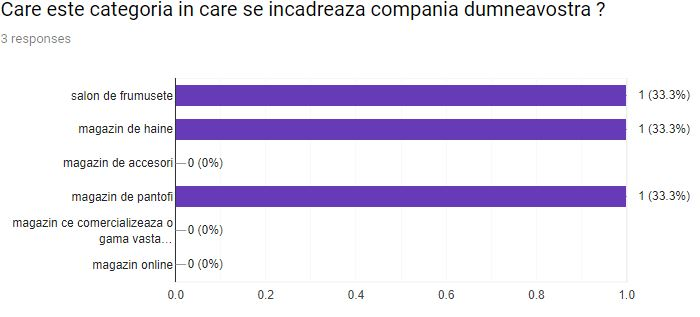

The happiness and enthusiasm of attending the prom could be overshadowed by the stress of choosing the perfect outfit and hairstyle. If time management and decision making are not among your strongest qualities, but you still want the Prom Night to be unforgettable, then you might find yourself in a difficult position. What would be the model of the dress, the color of the nails, the right hairstyle, the appropriate height of the heels, an adequate means of transportation and most of all, when will you find the time to accommodate everything and make all these arrangements and appointments ?
Our Solution
A single App that will centralise all the needed information and provide the opportunity of handling your appointments in a time efficient way. The App’s feature set includes:
showcase of multiple dress models
partnerships with dresses providers and possibility of purchasing the desired product through the app ( + delivery)
showcase of multiple hairstyles
showcase of multiple shoes models
a list of salons for manicure and hairstyle appointments
a list of transportation suggestions
the possibility of creating a group of friends to make sure there will not be two people with the same outfit
the possibility of providing a time frame and a list of favorites salons and getting all your appointments done automatically
facilitates renting a limousine
modern fashion suggestions
a simulator to see how the dress and the shoes would look together in different colors
Market
Customer Segment
Mostly young graduates that will participate to their graduation Prom, with ages roughly covered between 22-25. If the app is a success it might get extended to Highschool Proms as well.
Competition
Our advantages
unique value on the market - little to no similar products are available on the market
team - all 6 of us have been through the experience of both highschool and university proms, so we know what people want and what the feedback has been
growth possibility by extending the app to handle other types of events as well or adding new features
solves a popular problem amongst a large percentage of the population
Key Metrics
How many people download the application
How many salons signed contracts with us
How many dresses or shoes are sold through the application
Cost Structure
There are two types of costs: fixed costs and variable costs. At the beginning of our startup, there are no variable costs. As for fixed costs we can mention the following:
Bank charges
Application maintenance
Promotion and advertising of the app
Revenue streams
Our startup will gain its revenues from:
Application downloads from google store or app store
Advertisements
Other partners such as salons, limo rentals and dress shops
Team
Our Team
Product Manager
Andreea Dumitrache
Product Owner
Violeta Amza
Frontend Developer
Cristina Teodorescu
Frontend Developer
Adrian Dudau
Backend Developer
Radu Raluca
Backend Developer
Anghel Calugareanu
Validation
Synopsis
The thought of spending too much time and money for finding something to wear (dress/smoking) has lead us to investigate a solution to benefit
those who meet this kind of problem. The proposed solution is to ask as many people as we can to check if the problem is real. If so, then
by implementing an application that will meet each requirement of each person's problem, then the proposed solution is good and we can continue
by developing our idea.
For testing the problem, each of us will take notes about how many clients are visiting a specific salon/store and how much time each client
is willing to spend.
For testing the solution, we will take a specific approach to make life easier for each of the client. For example, we will propose to clients
the nearest salons with their prices and the estimated time for their hairstyle/manicure. We will propose also the dresses/smokings that are
available at different stores with their prices.
In the end, we will establish if our solution met all the important requirements. If not, then we will take a different approach to develop our idea.
1. How we identified the problem
Personal experiences
The formation of this idea first took birth by an internal realization upon reflecting on the prom nights we participated in previously. Having noticed the
seemingly insurmentable amount of time that was spend searching for an outfit and comparing it to the actual time shops delivered a suitable option, we concluded
that this situation is affecting our life quality in that particular period of the years. There were several factors that amplified the gravity of the
discovered situation, the psychological aspect, which will be discussed below, and the pressure surrounding graduation time - time that could have been invested in
preparation for either university Entry Exam and the national Bacalaureate Exam or delivering a presentation for the Bachelor's degree thesis was instead used to
do all the necessary work to put together an outfit for the prom night. This includes looking for the actual outfit in several different stores, as well as verifying
different salons and booking them accordingly.
We first took two details into consideration as a first contact with a sort of validation for our idea. The first issue refers to the large number of participants
in the prom event, compared to the number of total graduates of that year. For highschool attendees, the percentage of prom-present students is higher than that of the
university graduates, however the latter is not of a low quantity at all either. We made these assumptions based on the number of the students we found on graduation albums
compared to the number of students we knew we had in class, as well checking the number of participants in social media groups such as Facebook or WhatsApp, esspecially
created for discussing prom-participating issues. The second issue refers to the popularity of the problem among the media which we noticed every year, around the predefind prom period,
by discovering news depicting the students sharing their struggles and effort in interviews for having found the perfect outfit (which is often overly glamorous and difficult to compose,
time-wise as well as financially).
Psychological aspect
Moreover, following the development of social media, an undeniable amount of pressure is put on the senior students to deliver impeccable presentation
during the graduation party night. Online platforms (such as YouTube) flood the internet around the prom month with suggestions and tutorials regarding
in order to create the desired effect, while online blogs showcase the latest fashion trends for the event. We identified these patterns by looking at the
May and June issues of some of the most popular online blogs, as well as videos from reputable sources of inspiration on the platform Youtube, around the same
months. Titles such as 'How to dress for prom', 'Makeup for prom', 'The perfect prom outfit', etc. being the most popular.
2. What we considered a solution for the problem
What we initially figured could be a solution for the above mentioned problem is an application that offers suggestions of dress stores, hairstyles and makeup for prom,
based upon user issues chosen at entry, such as keywords or patterns. Moreover, there should be a list of salons the user could make appointments to depending on availability periods, the application
being able to send messages to book a spot at one of those, based on user preferences. There should also be a way of tracking the items per educational institution, so that
we can make sure if the item is already purchased by someone in the respective environment, there will not be two identical suggestions to avoid a later conflict. Moreover, since the
prom outfits are so pompous and worn only once, we could have an advertising system for sellers on the platform.
Moreover, this solution also provides confort from a psychological perspective. Knowing the high presence of anxiety among teenagers and young adults manifesting when
having to make an appointment to a salon or directly interact with store employees. The app would thus also eliminate the pressure of the salesperson to purchase an undesired item
sparing the user from undesired budget consumation.
3. Plan for customer discovery
In order to make sure this solution proves sufficiently fruitful for its potential users, a study should be done, addressing two main customer segments: the graduates and the partners.
Reaching the first cathegory is to be done by proximity. We will contact large groups of prom participants as well as colleagues and ex colleagues whose presence we could confirm at the prom night.
They will be asked to complete a questionnaire without being aware of the actual solution we intend to construct, so that accidental dishonenesty is avoided.
Reaching the second cathegory is to be done by forming a list of salons and stores that could benefit from being partners to this application and contacting them in order to verify through
our questionnaire if tackling of the addressed issue is beneficial for them.
4. Process description in detail
Finding the possible customers of our application was pretty straight forward, taking into consideration the final aim of PromBox : helping young people organize celebrations and special events, and most of all, their prom night. Therefore, the main customer segment consists in the young generation with ages between 20-25 who recently participated at their Bachelor Graduation Prom. Younger people, with ages between 18-20 were also taken into consideration due to the well known custom of having a prom for High School Graduation. The segment of customers with ages between 20 and 30 years old is also a very interesting one, since this is the time in our lives in which we attend most weddings and other kind of special events that need a lot of organization.
Thanks to the fact that all our team members are fresh graduates and we all attended Graduation Prom last year, we were part of different groups on social media (whats app and most of all facebook), which gave us the opportunity to share a research form with our former colleagues. Furthermore, each of us shared the form with close friends, acquaintances and old high school friends, which expanded our radius and we managed to collect a total of 90 replies (samples for our research study).
The form questions aim to identify how difficult was for the youngsters to organize all the details for a perfect prom night and to establish if this represents indeed a problem for the target customers, helping us to determine if the business idea is worthed. We asked how much time did it took to find the perfect outfit, the salon and means of transport. The results show that the main concern of the young generation was finding the outfit and more than a half considered they spent a considerable amount of time. At the question of which are the biggest problems in managing the prom preparations, our candidates identified again the outfit, but they added the hairdressing, the make up, the salon appointments, the search for the perfect pair of shoes. We moved on by asking if they encountered this kind of problems in other situations before and more than 80% had a positive answer, telling us that they felt the same with other kind of events such as weddings, baptisms and parties. Finally the candidates flagged WhatsUp, Facebook and Messenger as the main means of communication for the category of events that we brought up in discussion.
The team has also tried to reach possible partners for our business and find out more about what are they thinking regarding our application. We composed a second form especially for salons, dresses and suits vendors, shoes vendors, make up vendors and identified 60 targets, obtaining their email address during a research. However out of 60, only 3 shops replied, which is not a enough to be considered as a sample. The next possible step could be to approach them in person, if the application keeps being worthed further on our path.
Graduates questionnaire and responses
Partner questionnaire and responses

Insights
5. Insights affecting our product
We were extremely happy to discover the youngsters were so opened to our ideas, that they contributed to our research and filled the form and most of all that we actually identified a real problem that bothered so many people. It is our conclusion, after interpreting the results, that young people would enjoy a Prom Box application, with suggestions about the outfit, accessories and hairdressing.
We acknowledge that the main issue is the outfit and for the feminine part it is also very important the uniqueness of the Prom dress.Therefore we decided to create groups in our application that will help the participants of specific events diminish the number of collisions per outfit or color. If a person wants to keep her or his outfit secret, they should just upload a photo anonymously and make everyone else in the group aware that the outfit is already taken.
Moreover gathering together all the shops and vendors with party dresses and suits, in the same application should become our focus, since the main problem is the time spend in finding the outfit. The customers could shop for what they need online, place an order and not visit all the shops in town. This could save time, energy and what is even better could save you the regret. When you buy an outfit and a few days later you discover something better at a shop which you considered too far at the beginning, but you finally decide to visit, that is called regret.
Last but not least, we point out the possibility of growth that resides in the Prom Box idea, since most of our candidates indicated they would need such an application not only for Prom, but for other special events such as weddings and parties.
6. Are we ready to move to the Customer Validation stage?
After analysing the results of the research, the next logical step would be designing a prototype application, taking into consideration our old ideas, together with our new findings. We consider that could take us a bit of time, but afterwards we could share the prototype with our closest friends and ask them to test the application. This is how we imagine the first round of customer validation.
During summer the client flow is reduced because of the holidays
Services offered: haircuts, cosmetics, nails
Customers who come to the salon for special occasions
Better ways to make customers aware of special offers
Attracting a new customer base
Bucharest
Customers usually come through recommendations from other customers
Online exposure
Most appointments done on the phone
2. Online marketing
Demographics
Behaviour
Needs
Problems
Dress shop
Targeted clients: people who have an upcoming special event
Special person who deals with online marketing
Rely on the fact that Facebook and Instagram grow by themselves
Services offered: dresses for special occasions made in Romania
Customers come mostly from the internet - Facebook and Instagram
Rely on the already existing fame of the brand
Bucharest
3. Student01
Demographics
Behaviour
Needs
Problems
job: student
has three/four special events per year
short distance between dress shop and home/work
long distance between dress shop and home/work
age: 22
is a loyal customer
appointments done on the phone
address: Bucharest
not necessary a new outfit for every event
gender: male
4. Student02
Demographics
Behaviour
Needs
Problems
job: student
the attendance of the events: occasionally
appointments done on the phone
the stress of choosing the perfect outfit
age: 22
not necessary a new outfit for every event
list of reviews
time management
address: Bucharest
trust salons for manicure, hairstyle and makeup
find the perfect and unique dress
gender: female
5. Employee01
Demographics
Behaviour
Needs
Problems
job: programmer
has three/four special events per year
tailoring services for a special occasion
the final result wasn’t the expected one
age: 26
not necessary a new outfit for every event
list of reviews
time management
address: Bucharest
usually, reads reviews
long distance between dress shop and home/work
gender: female
6. Employee02
Demographics
Behaviour
Needs
Problems
job: programmer
the attendance of the events: occasionally
short distance between dress shop and home/work
tpoor transportation services
age: 23
not necessary a new outfit for every event
showcase of multiple shoes models or other products
address: Bucharest
online commands
online purchasing and delivery process
gender: male
Use Cases/User Flows
Partner Flow. Click to zoom in
Partner Use Case. Click to zoom in
Client Flow. Click to zoom in
Client Use Case. Click to zoom in
New Wireframe
New Wireframe
Lead generation and collection
Lead generation and collection
1. Landing page update
First of all the team took care of updating and changing the last version of the landing page into something more appealing. The design was sketched again, an attractive image was added at the beginning of the page, a new main menu at the top and some slide shows were included. Apart from these new features, the team also added some animations, special funny effects to the welcoming image and some next and prev arrows to the slide shows meant to illustrate possible salons and clothing brands opportunities. Long blobs of text were summarized in order to catch the essential and to arise the users interests.
After refactoring the aspect of the landing page, we added helper tools that will support us in the next stage and reveal important metrics related to our users behaviour. We used Formspree, Hotjar and Google Analytics.
2. Landing page update
In order to bring people on our landing page we shared its link on two main channels: Facebook and WhatsUp. Taking into consideration that the main target of our product are young people that attend parties or proms, we shared the link and invited them to take a look at our landing page, by posting on targeted Facebook Groups: the Prom Group for the 2019 Generation (Faculty of Automatic Control and Computer Science), old Series Groups like CC and C1. These specific groups were intentionally targeted because they bring together lots of youngsters that already had a Prom experience, so they are already sensitive to these subject and furthermore they represent the main customer segment of the product due to their age and customs.
The promotion stage was taken a step further and we even used WhatsUp to ask personal friends and family to share the link of the landing page among their own friends circles. We believe that a personal approach could be more effective than yet another post on a Facebook Group.
3. Analyzing updates
After spreading the word and inviting people to navigate our landing page site, we took a close look at the results that were collected.
Google Analytics
Google Analytics provided us with a lot of useful metrics, that helped use realize how many visitors we had and how successful was their interaction with our website:
- there were 119 users in total, in one week (10 -17 November 2019)
- 148 sessions with the average session time of 34 seconds
- the 119 users had an average time of 33 seconds spend on the landing page, but among them there were 20 users that came back more than once (recurrent users) which scored an average of 40 seconds
- 73% of the sessions were started using a mobile device
- the rejection rate computed by Google Analytics raised up to 88%
Hotjar
Heatmap, analyze click maps
Hotjar provided a very useful insight within a heatmap that highlights the spots preferred by our users, the places on our website that were clicked the most. We recorded a big number of clicks on the next and prev arrows of the slide shows (for salons and clothing brands), some on the main menu on the top of the page and a few on our Fiki link. The menu items were clicked according to their position inside the page, the first items were clicked the most, while at the end, when the interest of the users dropped, the Features item in the menu for instance was clicked fewer times.
User recordings
After analysing the contents of the user recordings we came to the conclusion that there are three different types of users: the users that scroll chaotically and does not have enough patient to understand what the website is all about, the users the scroll a bit slower but don’t read the information, they just play with all possible animation in their way and have fun with all sorts of visiual representations and the last category, the users that read the content, also get involved with the show slides, but in the end, usually fill in the subscription form.
Feedback that we received
Two of our users were kind enough to leave us some feedback. One of them appreciated the design (“Cool Design”), and the other expressed his/hers real interest in using the application when it will be ready (“I would have liked actual links. The mobile version looks great, congrats.”).
Formspree>
Counting on Google Analytics we know the number of visitors was 119 in one week, out of which 20 were recurrent visitors. With Formspree’s help we counted 8 visitors that turned into leads and were successfully converted. They filled in the subscription form, consenting they want to receive further information via email, and keep in touch with the progress of our product. In conclusion the conversion rate is 6.722.
Campaign channels comparison>
After analyzing the results described above and investigating who are our subscribers we decided that the WhatsUp sharing method was more effective than posting on Facebook Groups. When we approached people at a more personal level the results were better. However, we wouldn’t say that WhatsUp is a better channel than Facebook, but we would agree that a closer and more personal approach pays off.